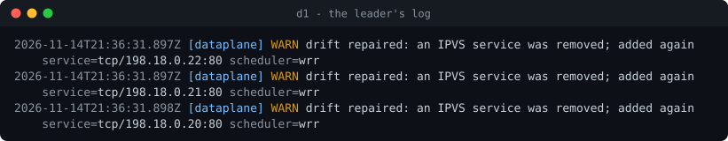
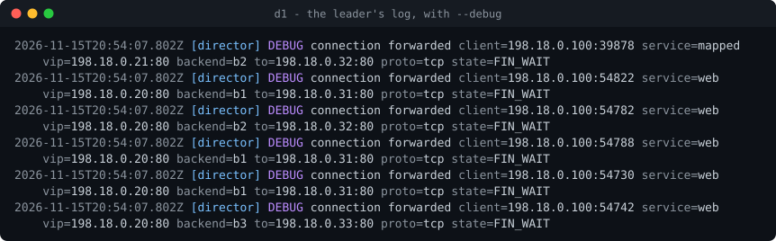
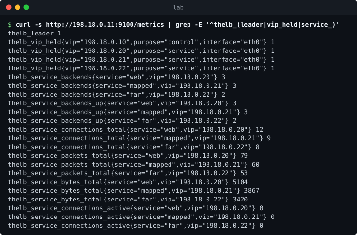

Guides
Status, logs and metrics
Three ways to see what theLB is doing - thelb status for now, the log for what happened, and Prometheus metrics for your dashboards.
thelb status#
sudo thelb status # the summary
sudo thelb status directors # directors, pending directors, certificates
sudo thelb status backends # backends, offers, and who serves what
sudo thelb status offers # every offer, and which are not assigned
sudo thelb status vips # VIPs and who holds them, services, pools
sudo thelb status all # everything
sudo thelb status --json # the same, as JSON
sudo thelb status --watch # again every 2 seconds
As text
$ sudo thelb status
cluster | id | created | leader | term | leader since | vip lease
---------+----------+---------------------+--------+------+---------------------+-----------
lab | ac7940f8 | 2026-11-15 20:53:47 | d1 | 2 | 2026-11-15 20:53:48 | 6s
what | total | up | down | pending
-----------+-------+----+------+---------
directors | 3 | 3 | 0 | 0
backends | 4 | 4 | 0 | 0
services | 3 | 3 | 0 | -
vips | 4 | 4 | 0 | -
More: thelb status directors | backends | vips | allstatus backends shows each backend of each service: its checks, its weight in IPVS, and the traffic IPVS sent it:

As text
$ sudo thelb status backends
node | role | address | state | version | node fingerprint | last check-in
------+---------+-------------+-------+---------+------------------+---------------
b1 | backend | 198.18.0.31 | up | 0.1.0 | 0beaab3f6d2dfb43 | 1.9 s ago
b2 | backend | 198.18.0.32 | up | 0.1.0 | 8948c9a6b3974fe9 | 1.9 s ago
b3 | backend | 198.18.0.33 | up | 0.1.0 | 86fbc35cd82f7f79 | 1.9 s ago
b4 | backend | 198.19.0.41 | up | 0.1.0 | 525079852f9bb67e | 1.5 s ago
pending | role | address | mac | node fingerprint | waiting
---------+------+---------+-----+------------------+---------
node | offer | address | port | check | own check | service | since
------+----------+-------------+----------+--------+-----------+----------+--------
b1 | tcp-80 | 198.18.0.31 | tcp/80 | http / | ok | far, web | 11.9 s
b1 | tcp-8080 | 198.18.0.31 | tcp/8080 | http / | ok | mapped | 11.9 s
b2 | tcp-80 | 198.18.0.32 | tcp/80 | http / | ok | web | 11.9 s
b2 | tcp-9090 | 198.18.0.32 | tcp/9090 | http / | ok | mapped | 11.9 s
b3 | tcp-7070 | 198.18.0.33 | tcp/7070 | http / | ok | mapped | 11.9 s
b3 | tcp-80 | 198.18.0.33 | tcp/80 | http / | ok | web | 11.9 s
b4 | tcp-80 | 198.19.0.41 | tcp/80 | http / | ok | far | 11.5 s
service | vip | backend | at | checks | weight | connections | packets | bytes | last check-in
---------+----------------+---------+------------------+---------+--------+-------------+---------+--------+---------------
web | 198.18.0.20:80 | b1 | 198.18.0.31:80 | ok / ok | 1 | 4 | 25 | 1.6 kB | 1.9 s ago
web | 198.18.0.20:80 | b2 | 198.18.0.32:80 | ok / ok | 1 | 4 | 26 | 1.7 kB | 1.9 s ago
web | 198.18.0.20:80 | b3 | 198.18.0.33:80 | ok / ok | 1 | 4 | 28 | 1.8 kB | 1.9 s ago
mapped | 198.18.0.21:80 | b1 | 198.18.0.31:8080 | ok / ok | 1 | 3 | 20 | 1.3 kB | 1.9 s ago
mapped | 198.18.0.21:80 | b2 | 198.18.0.32:9090 | ok / ok | 1 | 3 | 20 | 1.3 kB | 1.9 s ago
mapped | 198.18.0.21:80 | b3 | 198.18.0.33:7070 | ok / ok | 1 | 3 | 20 | 1.3 kB | 1.9 s ago
far | 198.18.0.22:80 | b1 | 198.18.0.31:80 | ok / ok | 1 | 4 | 26 | 1.7 kB | 1.9 s ago
far | 198.18.0.22:80 | b4 | 198.19.0.41:80 | ok / ok | 1 | 4 | 27 | 1.7 kB | 1.5 s ago
certificate | kind | fingerprint | not after
-------------+---------+------------------+---------------------
b1 | backend | 59eadccbf3c92770 | 2026-11-16 20:53:53
b2 | backend | a58c9affc202d176 | 2026-11-16 20:53:53
b3 | backend | 0e591fe45e592b4d | 2026-11-16 20:53:53
b4 | backend | bc53fbdf9b6dcef2 | 2026-11-16 20:53:53Reading thelb status explains every column.
Logs#
theLB writes one line per event to standard error - so under systemd, to the journal (journalctl -u thelb-director).
2026-11-09T01:28:39.596Z [director] OK service added service=web vip=10.0.0.20 proto=tcp port=80 scheduler=wrr method=direct pool=main by=lb-1
2026-11-09T01:28:55.655Z [director] WARN backend not serving: weight 0 service=web node=web-1 at=10.0.0.21:80 reason="the director's check fails"OKis something that went as it should;WARNis something to look at;ERRORis a failure.- The word in brackets is the part of theLB that wrote it:
director,backend,network,dataplane,kernel,raft,socketorwatchdog. - No secret or key is ever logged.
When a backend's application stops, the leader's log says so - and says so again when it is back:

b2's web servers stopped and started again: weight 0, then serving again.As text
2026-11-15T20:54:20.984Z [director] WARN backend not serving: weight 0 service=web node=b2 at=198.18.0.32:80 reason="the director's check fails"
2026-11-15T20:54:20.985Z [director] WARN backend not serving: weight 0 service=mapped node=b2 at=198.18.0.32:9090 reason="the director's check fails"
2026-11-15T20:54:25.998Z [director] OK backend serving service=web node=b2 at=198.18.0.32:80 weight=1
2026-11-15T20:54:25.999Z [director] OK backend serving service=mapped node=b2 at=198.18.0.32:9090 weight=1When something changes theLB's setup behind its back, theLB puts it back within 10 seconds and logs it. Here someone cleared IPVS on the leader (ipvsadm -C):

As text
2026-11-15T20:54:30.009Z [dataplane] WARN drift repaired: an IPVS service was removed; added again service=tcp/198.18.0.22:80 scheduler=wrr
2026-11-15T20:54:30.009Z [dataplane] WARN drift repaired: an IPVS service was removed; added again service=tcp/198.18.0.21:80 scheduler=wrr
2026-11-15T20:54:30.010Z [dataplane] WARN drift repaired: an IPVS service was removed; added again service=tcp/198.18.0.20:80 scheduler=wrrLog messages lists the messages that need you to do something.
Each connection, with --debug#
Start a director with --debug to log every new connection. While it leads, it reads the kernel's connection table every second and logs each new connection once: the client's address, the service and VIP, and the backend it went to.

As text
2026-11-15T20:54:07.802Z [director] DEBUG connection forwarded client=198.18.0.100:39878 service=mapped vip=198.18.0.21:80 backend=b2 to=198.18.0.32:80 proto=tcp state=FIN_WAIT
2026-11-15T20:54:07.802Z [director] DEBUG connection forwarded client=198.18.0.100:54822 service=web vip=198.18.0.20:80 backend=b1 to=198.18.0.31:80 proto=tcp state=FIN_WAIT
2026-11-15T20:54:07.802Z [director] DEBUG connection forwarded client=198.18.0.100:54782 service=web vip=198.18.0.20:80 backend=b2 to=198.18.0.32:80 proto=tcp state=FIN_WAIT
2026-11-15T20:54:07.802Z [director] DEBUG connection forwarded client=198.18.0.100:54788 service=web vip=198.18.0.20:80 backend=b1 to=198.18.0.31:80 proto=tcp state=FIN_WAIT
2026-11-15T20:54:07.802Z [director] DEBUG connection forwarded client=198.18.0.100:54730 service=web vip=198.18.0.20:80 backend=b1 to=198.18.0.31:80 proto=tcp state=FIN_WAIT
2026-11-15T20:54:07.802Z [director] DEBUG connection forwarded client=198.18.0.100:54742 service=web vip=198.18.0.20:80 backend=b3 to=198.18.0.33:80 proto=tcp state=FIN_WAITA busy service writes many lines, so turn --debug on to look, not for good. Without it there are no DEBUG lines at all.
Metrics#
--metrics <address:port> on a director or a backend serves Prometheus metrics at http://<address:port>/metrics.
sudo thelb director ... --metrics 10.0.0.11:9100Choose the address carefully
The metrics are plain HTTP. Use an address that only your monitoring can reach - 127.0.0.1, or the machine's management address. theLB refuses 0.0.0.0 and ::, because they would include the VIPs.
Every director reports its own state, and only the leader reports what the cluster serves. So scrape every director: nothing is counted twice.

As text
$ curl -s http://198.18.0.11:9100/metrics | grep -E '^thelb_(leader|vip_held|service_)'
thelb_leader 1
thelb_vip_held{vip="198.18.0.10",purpose="control",interface="eth0"} 1
thelb_vip_held{vip="198.18.0.20",purpose="service",interface="eth0"} 1
thelb_vip_held{vip="198.18.0.21",purpose="service",interface="eth0"} 1
thelb_vip_held{vip="198.18.0.22",purpose="service",interface="eth0"} 1
thelb_service_backends{service="web",vip="198.18.0.20"} 3
thelb_service_backends{service="mapped",vip="198.18.0.21"} 3
thelb_service_backends{service="far",vip="198.18.0.22"} 2
thelb_service_backends_up{service="web",vip="198.18.0.20"} 3
thelb_service_backends_up{service="mapped",vip="198.18.0.21"} 3
thelb_service_backends_up{service="far",vip="198.18.0.22"} 2
thelb_service_connections_total{service="web",vip="198.18.0.20"} 12
thelb_service_connections_total{service="mapped",vip="198.18.0.21"} 9
thelb_service_connections_total{service="far",vip="198.18.0.22"} 8
thelb_service_packets_total{service="web",vip="198.18.0.20"} 79
thelb_service_packets_total{service="mapped",vip="198.18.0.21"} 60
thelb_service_packets_total{service="far",vip="198.18.0.22"} 53
thelb_service_bytes_total{service="web",vip="198.18.0.20"} 5104
thelb_service_bytes_total{service="mapped",vip="198.18.0.21"} 3867
thelb_service_bytes_total{service="far",vip="198.18.0.22"} 3420
thelb_service_connections_active{service="web",vip="198.18.0.20"} 0
thelb_service_connections_active{service="mapped",vip="198.18.0.21"} 0
thelb_service_connections_active{service="far",vip="198.18.0.22"} 0| Metric | What it is |
|---|---|
thelb_build_info{role,version,commit} | always 1; the build is in the labels |
thelb_member, thelb_leader | 1 or 0: in a cluster; the leader |
thelb_raft_term, thelb_vip_lease_seconds | the Raft term this director knows; the VIP lease |
thelb_nodes{role,state} | the cluster's nodes, by role and state |
thelb_takeovers_total | how many times this director stood alone, the other of two gone |
thelb_vip_held{vip,purpose,interface} | leader: 1 for each VIP it holds |
thelb_service_backends{service,vip}, thelb_service_backends_up{service,vip} | leader: backends assigned, and serving |
thelb_backend_weight{service,backend} | leader: each backend's weight in IPVS (0 while it does not serve) |
thelb_backend_check_up{service,backend,check} | leader: 1 while a check passes; check is own or director |
thelb_backend_connections_total, _packets_total, _bytes_total | leader: what IPVS sent each backend |
thelb_backend_connections_active, _inactive | leader: each backend's connections now |
thelb_service_connections_total, _packets_total, _bytes_total, thelb_service_connections_active | leader: the traffic through it, by service and VIP |
thelb_offer_check_up{offer,port}, thelb_offer_assigned{offer,service} | backend: its own checks, and its offers' services |
The traffic counts are what came in. Replies go from the backends straight to the clients, so they never pass a director, and there is no count of them.